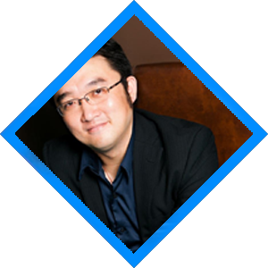

夏磊
- 
希望大家能夠喜歡我們的聲音，這輩子我將為配音工作
人稱「磊大」，聲線特點屬於小生類型，音質偏圓潤溫暖，憨厚可愛，同時也可以陰沉冷酷，較有彈性，可塑性強。擅長演繹陽光開朗、性格文雅的角色，或者是城府較深、內心複雜的反面人物。科班出生，他一直在這個圈子既很大又很小的配音行業里默默耕耘、保持著謙遜與隨和。
導演作品-《櫻桃小丸子》、《山河劍心》、《古墓麗影：崛起》、《古劍奇譚三》...... 配音作品-沈嶠——《山河劍心》、雲山——《鬥破蒼穹》、喻文州——《全職高手2》、鬼舞辻無慘——《鬼滅之刃》、許墨——《戀與製作人》、風間琉璃——《龍族幻想》、張起靈——《盜墓筆記》......